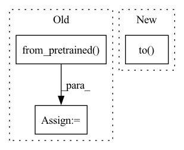

Pattern ID :34057
Before Change
)
vae = self.dummy_vae
bert = self.dummy_text_encoder
tokenizer = CLIPTokenizer.from_pretrained( "hf-internal-testing/tiny-random-clip")
unet = unet.half()
vae = vae.half()
bert = bert.half()After Change
if hasattr(module, "half"):
components[name] = module.half()
pipe = CycleDiffusionPipeline(**components)
pipe = pipe.to( torch_device)
pipe.set_progress_bar_config(disable=None)
inputs = self.get_dummy_inputs(torch_device)
output = pipe(**inputs)In pattern: SUPERPATTERN
Frequency: 4
Non-data size: 3
Instances Fragment ID: 97406120
Project Name: huggingface/diffusers
Commit Name: 02d83c9ff1b93f2c6f9c94f9369b3e4bc1ba8ce7
Time: 2022-12-06
Author: anton@huggingface.co
File Name: tests/pipelines/stable_diffusion/test_cycle_diffusion.py
M Class Name: CycleDiffusionPipelineFastTests
N Class Name: CycleDiffusionPipelineFastTests
M Method Name: test_stable_diffusion_cycle_fp16(1)
N Method Name: test_stable_diffusion_cycle_fp16(1)
M Parent Class: unittest.TestCase,PipelineTesterMixin
N Parent Class: unittest.TestCase,PipelineTesterMixin
M File Name: tests/pipelines/stable_diffusion/test_cycle_diffusion.py
N File Name: tests/pipelines/stable_diffusion/test_cycle_diffusion.py
M Start Line: 207
M End Line: 253
N Start Line: 133
N End Line: 142
Before Change
_model = AutoModelForCausalLM.from_pretrained(model,
revision="float16",
torch_dtype=torch.float16)
tokenizer = AutoTokenizer.from_pretrained( model)
_model.half()
pipe = pipeline(
task,
model=_model,After Change
// Switch device to GPU after converting to half
device = torch.device(f"cuda:{local_rank}")
pipe.device = device
pipe.model.to( device)
// Warm-up queries for perf measurement
//for i in range(10):
// _ = pipe(query, **inf_kwargs) Fragment ID: 97406119
Project Name: microsoft/deepspeed
Commit Name: 34fb6d198056fe169d6fca6d6c45f66d0264fe08
Time: 2022-10-17
Author: michaelwyatt@microsoft.com
File Name: tests/unit/inference/test_inference.py
M Class Name: TestModelTask
N Class Name: TestModelTask
M Method Name: test(8)
N Method Name: test(8)
M Parent Class: DistributedTest
N Parent Class: DistributedTest
M File Name: tests/unit/inference/test_inference.py
N File Name: tests/unit/inference/test_inference.py
M Start Line: 228
M End Line: 249
N Start Line: 232
N End Line: 239
Before Change
// set model to evaluation mode
model.eval()
tokenizer = BertTokenizer.from_pretrained( config.bert_model, do_lower_case=True, skip_special_tokens=True)
id2label = config.id2label
true_tags = []
pred_tags = []
sent_data = []After Change
batch_output = model((batch_data, batch_token_starts),
token_type_ids=None, attention_mask=batch_masks)[0]
label_masks = batch_tags.gt(-1).to( "cpu") .numpy() // get padding mask
batch_output = batch_output.detach().cpu().numpy()
batch_tags = batch_tags.to("cpu").numpy()
for i, indices in enumerate(np.argmax(batch_output, axis=2)): Fragment ID: 97406117
Project Name: hemingkx/wordseg
Commit Name: 148a03a62ebd0fc3dcbd4828b32aabd8ee76dc97
Time: 2021-05-05
Author: hemingkx@gmail.com
File Name: BERT-Softmax/train.py
M Class Name: AnonimousClass
N Class Name: AnonimousClass
M Method Name: evaluate(3)
N Method Name: evaluate(3)
M Parent Class:
N Parent Class:
M File Name: BERT-Softmax/train.py
N File Name: BERT-Softmax/train.py
M Start Line: 81
M End Line: 117
N Start Line: 80
N End Line: 125
Before Change
generator = torch.manual_seed(0)
def get_models(self, decay=0.9999):
unet = UNet2DConditionModel.from_pretrained( self.model_id, subfolder="unet", device=torch_device)
ema_unet = UNet2DConditionModel.from_pretrained(self.model_id, subfolder="unet")
ema_unet = EMAModel(
ema_unet.parameters(), decay=decay, model_cls=UNet2DConditionModel, model_config=ema_unet.config
)After Change
def get_models(self, decay=0.9999):
unet = UNet2DConditionModel.from_pretrained(self.model_id, subfolder="unet")
unet = unet.to( torch_device)
ema_unet = EMAModel(unet.parameters(), decay=decay, model_cls=UNet2DConditionModel, model_config=unet.config)
return unet, ema_unet
def get_dummy_inputs(self): Fragment ID: 97406112
Project Name: huggingface/diffusers
Commit Name: 4553c29d9275dc1e4e6bd597fba0c3b48d103cfd
Time: 2023-03-15
Author: spsayakpaul@gmail.com
File Name: tests/test_ema.py
M Class Name: EMAModelTests
N Class Name: EMAModelTests
M Method Name: get_models(2)
N Method Name: get_models(2)
M Parent Class: unittest.TestCase
N Parent Class: unittest.TestCase
M File Name: tests/test_ema.py
N File Name: tests/test_ema.py
M Start Line: 36
M End Line: 39
N Start Line: 36
N End Line: 38